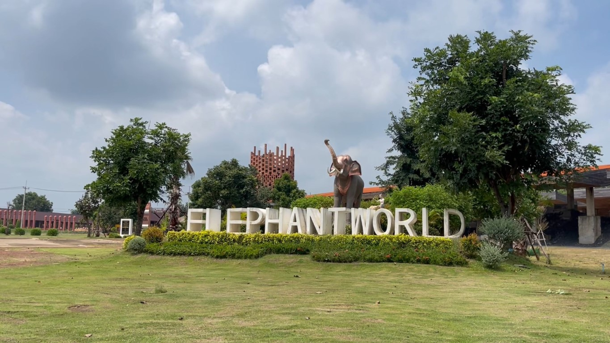
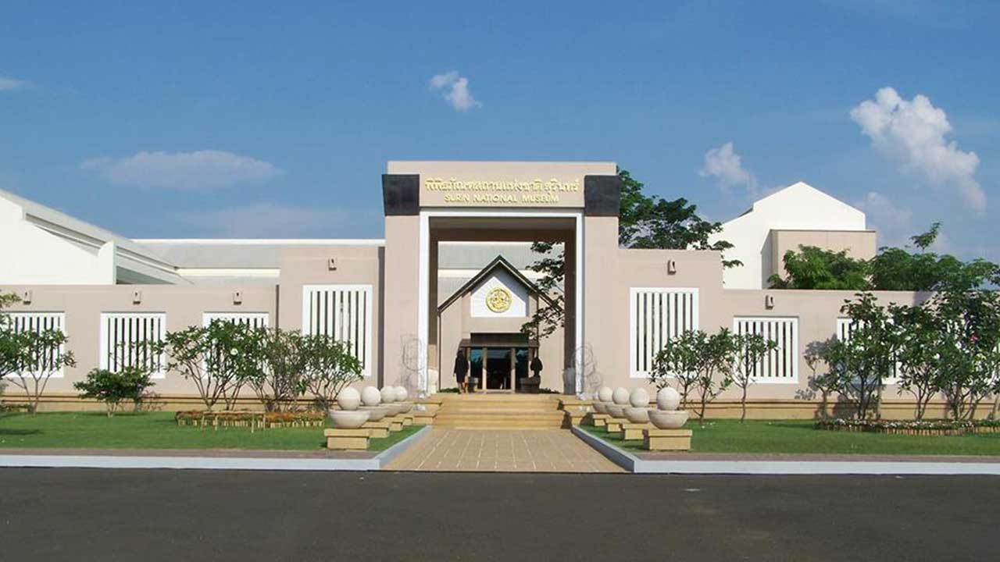
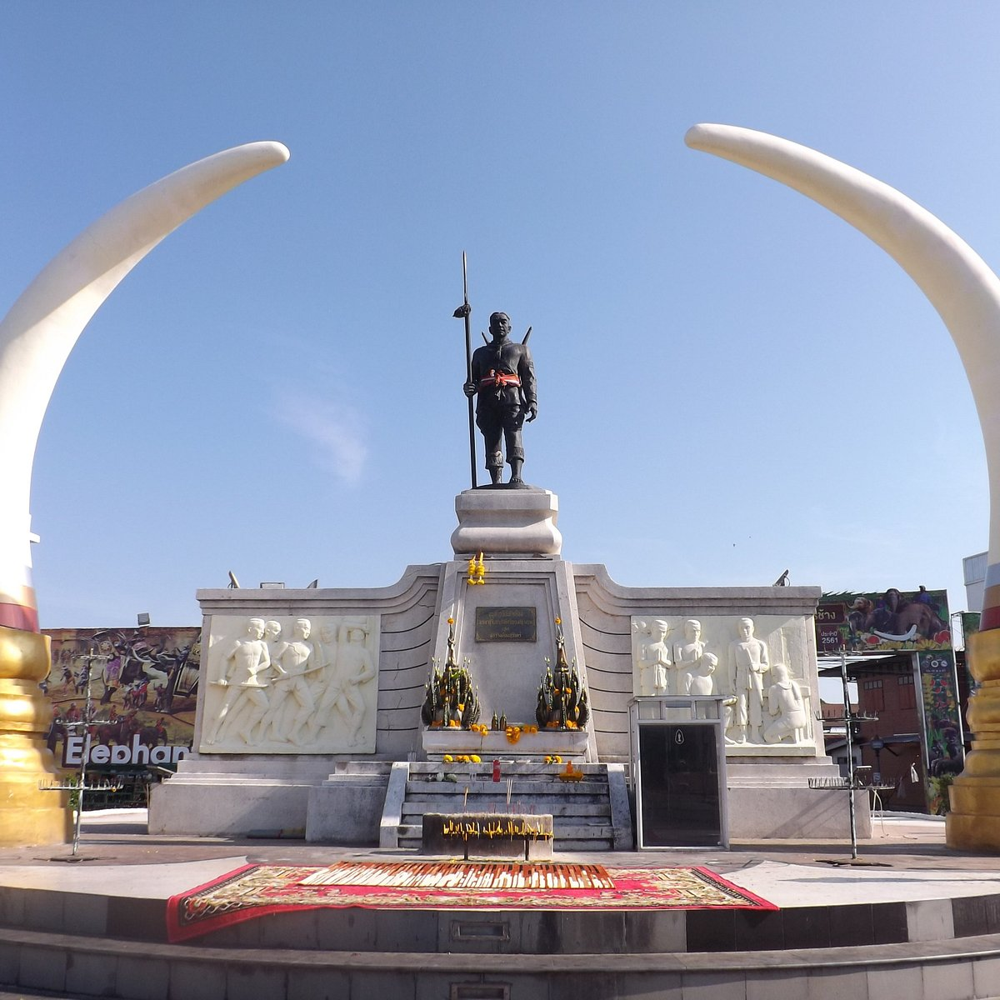
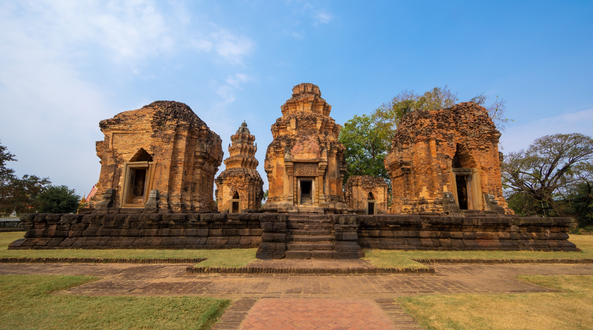
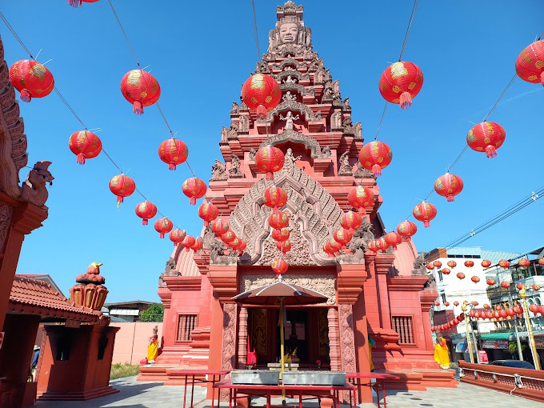
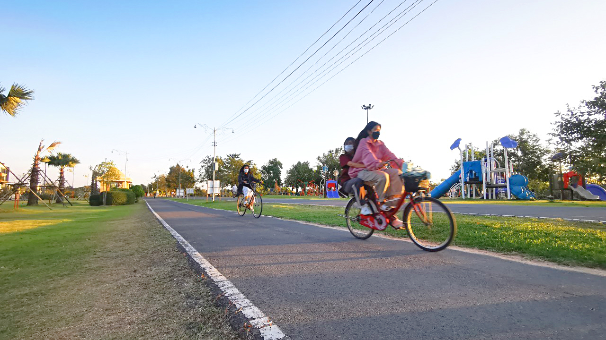
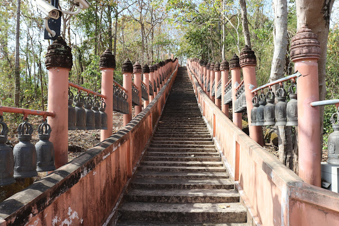
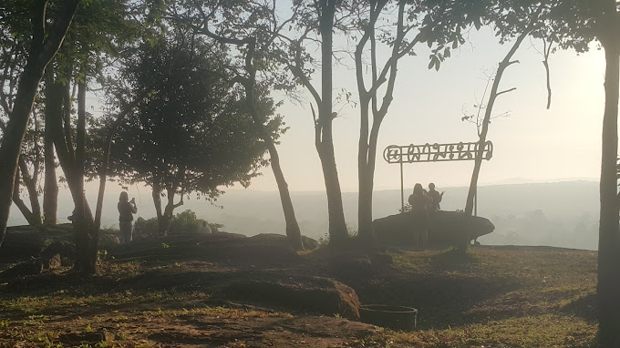
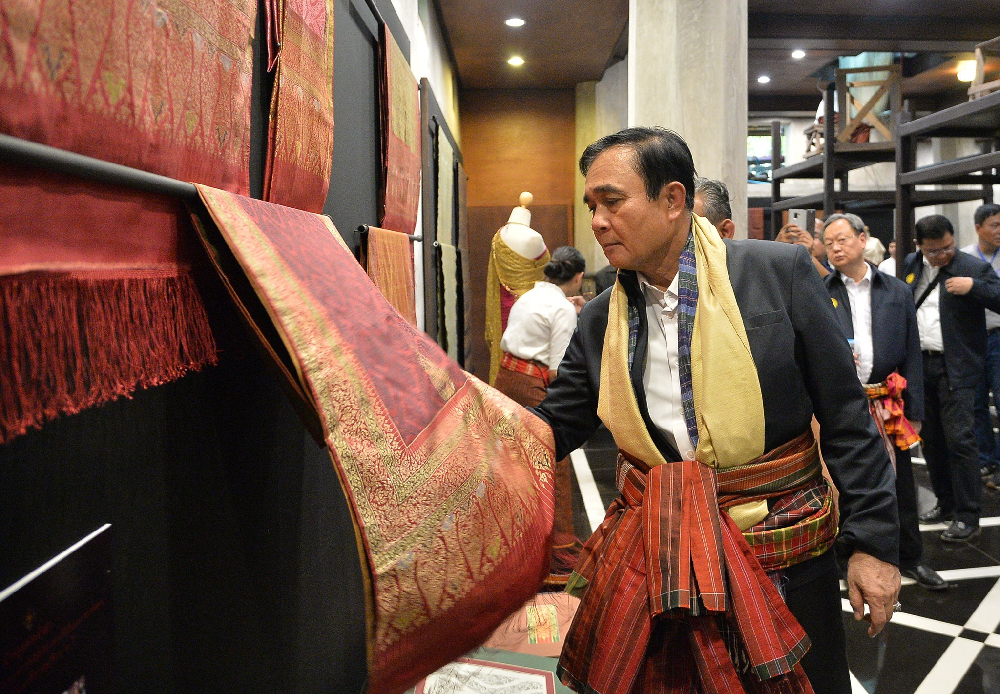
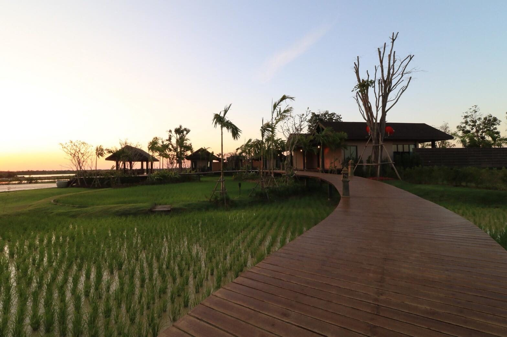

1. หมู่บ้านช้าง บ้านตากลาง
สถานที่ดำเนินงานตามโครงการนำช้างคืนถิ่น เพื่อแก้ไขปัญหาช้างเร่ร่อนให้กลับมาอยู่ถิ่นฐานบ้านเกิดอย่างมีความสุขโดยจัดการท่องเที่ยวเชิงวัฒนธรรมเพื่อรองรับนักท่องเที่ยว
ภายในหมู่บ้านมีโครงการโลกของช้าง บนพื้นที่กว่า 500 ไร่ เป็นศูนย์อนุรักษ์ช้างที่ใหญ่ที่สุดในโลก มีทั้งจัดแสดงเรื่องราวของช้าง เป็นแหล่งศึกษาข้อมูลทางวิชาการของช้าง
พิกัด : บ้านตากลาง หมู่2 ถนนสุรินทร์-ร้อยเอ็ด ตำบลกระโพ อำเภอท่าตูม จังหวัดสุรินทร์

2. พิพิธภัณฑสถานแห่งชาติสุรินทร์
สถานที่จัดแสดงเรื่องราวความเป็นมาของสุรินทร์ตั้งแต่อดีตจนถึงปัจจุบัน โดยแยกเป็นนิทรรศการแสดงเรื่องราวต่างๆ ออกเป็น 5 เรื่อง คือ ธรรมชาติวิทยา ประวัติศาสตร์โบราณคดี
ประวัติศาสตร์เมือง ชาติพันธุ์วิทยา มรดกดีเด่นประจำจังหวัด ภายในอาคารจัดแสดง 4 อาคารที่เชื่อมต่อถึงกัน
พิกัด : 214 หมู่ที่13 ถนนสุรินทร์-ช่องจอม ตำบลเฉนียง อำเภอเมืองสุรินทร์ จังหวัดสุรินทร์

3. อนุสาวรีย์พระยาสุรินทรภักดีศรีณรงค์จางวาง (ปุม)
อนุสรณ์สถานระลึกถึงผู้สร้างเมืองท่านแรก ซึ่งเป็นบุคคลสำคัญอย่างยิ่งในประวัติศาสตร์ของเมืองสุรินทร์ เดิมเคยเป็นกำแพงเมืองชั้นในของตัวเมืองสุรินทร์
อนุสาวรีย์เป็นรูปหล่อทองเหลืองรมดำสูง 2.2 เมตร เป็นคุณสมบัติที่ตกทอดเป็นมรดกของคนสุรินทร์
พิกัด : 26 ซอยศรีจุมพล 1 ตำบลในเมือง อำเภอเมืองสุรินทร์ จังหวัดสุรินทร์

4. ปราสาทศีขรภูมิ
ปราสาทศีขรภูมิ มีอีกชื่อหนึ่งเรียกว่าปราสาทระแงง ซึ่งมาจากชื่อตำบลระแงง มีการสันนิฐานว่าปราสาทแห่งนี้สร้างขึ้นตั้งสมัยพุทธศตวรรษที่ 17
ซึ่งมีศิลปกรรมขอมแบบ บาปวน (พ.ศ. 1550-1650) และแบบ นครวัด (พ.ศ. 1650-1700) เดิมเป็นเทวสถานเพื่อบูชา พระศิวะ เทพเจ้าแห่งศาสนาฮินดู
พิกัด : บ้านปราสาท ตำบลระแงง อำเภอศีขรภูมิ จังหวัดสุรินทร์

5. ศาลหลักเมืองสุรินทร์
สถานที่สำคัญคู่บ้านคู่เมืองของชาวสุรินทร์ เดิมเป็นศาลที่ยังไม่มีเสาหลักเมือง ต่อมา พ.ศ. 2511 กรมศิลปากรได้ออกแบบสร้างศาลหลักเมืองและเสาหลักเมืองใหม่
เป็นอีกหนึ่งในสถานที่ท่องเที่ยวที่สามารถไปสักการะได้อีกด้วย
พิกัด : ถนนเทศบาล3 ตำบลในเมือง อำเภอเมืองสุรินทร์ จังหวัดสุรินทร์

6. สวนเฉลิมพระเกียรติ จังหวัดสุรินทร์(สวนใหม่)
สวนเฉลิมพระเกียรติพระบาทสมเด็จพระเจ้าอยู่หัวเฉลิมพระชนมพรรษา 80 พรรษา เป็นสวนสาธารณะประจำจังหวัดสุรินทร์ และเป็นอีกหนึ่งในสถานที่หลัก
ในการผ่อนคลายที่ต้องมาเดินเล่นชมบรรยากาศ
พิกัด : ตำบลนอกเมือง อำเภอเมืองสุรินทร์ สุรินทร์

7. วนอุทยานพนมสวาย
สถานที่ท่องเที่ยวที่ตั้งอยู่บนภูเขาที่อยู่ในเขตวนอุทยานแห่งชาติพนมสวาย เป็นสถานที่แสวงบุญของชาวสุรินทร์มาแต่โบราณ ผู้มาเยือนจะได้เคาะระฆังพันใบ
และสักการะเก้าสิ่งศักดิ์สิทธิ์บนเขาเพื่อความเป็นสิริมงคล และวิวสวยๆ ให้เราได้เที่ยวชมกัน
พิกัด : เขตป่าสงวนแห่งชาติ ป่าเขาสวายท้องที่ตำบลนาบัว อำเภอเมืองสุรินทร์ จังหวัดสุรินทร์

8.ผามะนาว
ผาที่อยู่แนวชายแดนของไทยกัมพูชา เป็นลักษณะของหน้าผาสูงชันทอดยาวไปตามสันเขาพนมดงรัก ไฮไลท์ของผามะนาวอยู่ที่ตอนช่วงเช้าๆจะได้เห็นพระอาทิตย์
ขึ้นจากหลังภูเขา สาดแสงส่องผ่านป่าไม้ รวมถึงมีหมอกจางๆ กับอากาศเย็นๆ ให้ได้ฟินกันอีกด้วย
พิกัด : ตำบลโคกตะเคียน อำเภอกาบเชิง จังหวัดสุรินทร์

9. หมู่บ้านทอผ้าไหมยกทองโบราณบ้านท่าสว่าง
หมู่บ้านท่องเที่ยวเชิงหัตถกรรมผ้าไหมแห่งเดียวของประเทศ เป็นหมู่บ้านที่มีฝีมือในการทอผ้าไหมโบราณที่เป็นเอกลักษณ์ของจังหวัดสุรินทร์ ด้วยเทคนิคการทอผ้ายกทอง
แบบโบราณ จนได้รับการคัดเลือกให้เป็นผู้ทอผ้าไหมยกทองโบราณเพื่อมอบให้กับผู้นำเอเปค จนกลายเป็นแหล่งท่องเที่ยวด้านหัตกรรมที่สำคัญของจังหวัดสุรินทร์
พิกัด : 1 บ้านท่าสว่าง ถนนสุรินทร์-เมืองลีง ตำบลท่าสว่าง อำเภอเมืองสุรินทร์ จังหวัดสุรินทร์

10. ซแรย์ อทิตยา
แหล่งเรียนรู้เรื่องการเกษตรแบบพอเพียงของจังหวัดสุรินทร์ เกิดขึ้นมาจากความคิดริเริ่มของพระเจ้าหลานเธอพระองค์เจ้าอทิตยาทรกิติคุณ พื้นที่ภายในนั้นที่นี่มีการจัดแบ่ง
พื้นที่ไว้เพื่อการจัดกิจกรรมส่งเสริมการเรียนรู้เพื่อถ่ายทอดวิชาการทางการเกษตรและยังมีอีกหลายจุดที่จัดสรรไว้ให้เป็นพื้นที่พักผ่อนและเยี่ยมชมธรรมชาติ
พิกัด : ตำบลเทนมีย์ อำเภอเมืองสุรินทร์ จังหวัดสุรินทร์